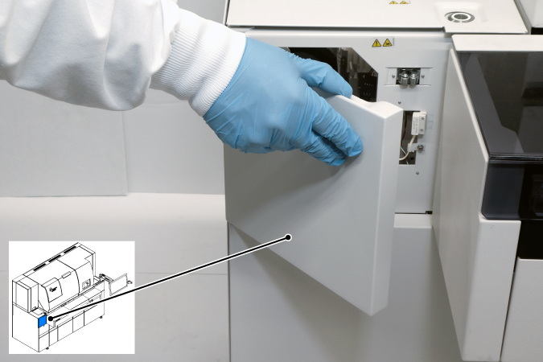
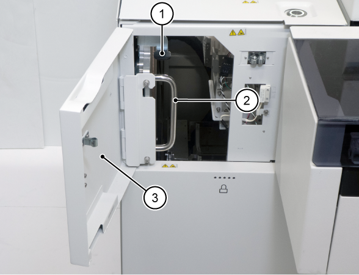
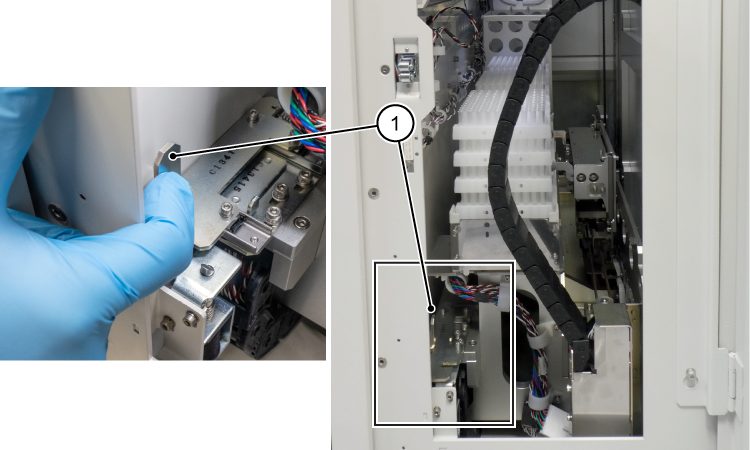

This topic includes information about how to open the disposable tip feeder drawer.
In the Console App go to
Menu > Tools > Diagnostics > Service Diagnostics.
Select
Start Session to enter the instrument into a
BLUE (Maintenance) status.
Go to
Disposable Tip Supply Diagnostics Menu > Tray Gripper Diagnostics to open the Tray Gripper Diagnostics page.
Figure 170: Tray Gripper Diagnostics
In the Drawer Unlock pane select
Drawer Unlock to unlock the release tab for the disposable tip tray feeder drawer lock
Open the cover on the disposable tip tray drawer.
Figure 171: Disposable Tip Tray Drawer Cover

Press down on the release tab to release the front lock on the tip feeder drawer.
Figure 172: Front Lock and Handle for the Tip Tray Feeder Drawer

1
Release tab on the front drawer lock
2
Tip feeder drawer handle
3
Tip feeder drawer cover
Open the lower right door on the back of the instrument.
Figure 173: Back Lower Right Door
Press left on the release tab to release the back lock on the tip feeder drawer. The drawer slides forward slightly when the lock is released.
Figure 174: Back Lock for the Tip Tray Feeder Drawer

1
Release tab on the back drawer lock
Use the handle on the front of the drawer to slide the drawer out of the feeder.
Note: Do not open the tip tray feeder drawer unless you confirm that the gripper is near a tray position at the bottom of the feeder. If you attempt open the tip tray feeder drawer when the tip tray gripper is near the top of the tip feeder, you will damage the gripper.
Figure 175: Opening the Disposable Tip Feeder Drawer
Figure 176: Tip supply stocker assembly extended with tray waste drawer in un-extended position